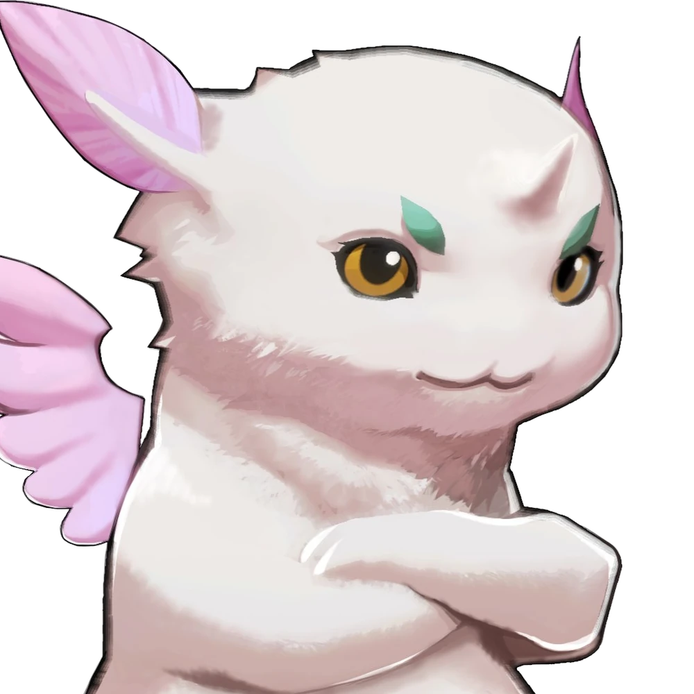

Azurda

One of the characters in Xenoblade Chronicles 2 is Azurda. Azurda is a little Titan who assumes the form of a white dragon in flight. Rex refers to him as Gramps. In addition to being Rex's home, Azurda is his guardian. Together, they traverse the Cloud Sea. Azurda survives a near-fatal fight with Jin and Malos, but in the process, he transforms back into a little white dragon with a core crystal in his chest, a larval state. As Rex's travel partner in this form, Azurda typically travels within his helmet. He is dependable and, despite his occasional loudness, will offer Rex numerous pieces of advice throughout combat. In particular, he will alert Rex if an enemy changes their element.
Quotes
"Remember Rex, pride comes before a fall."
---
"Your helmet makes for quite a snug berth, my boy."